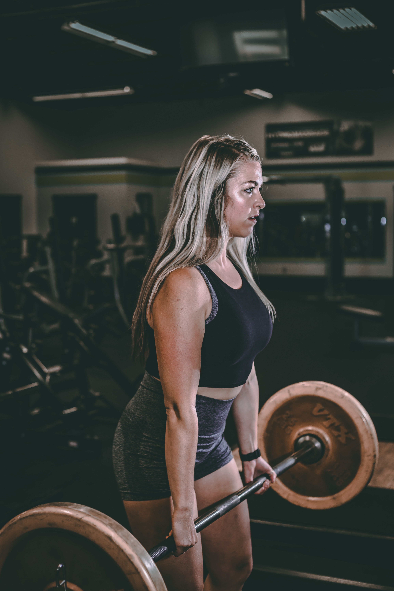

Welcome to your Core Workouts! Look below to learn how to do each core workout.
BENCH

STEP 1: Unrack the barbell keeping your arms straight without locking your elbows. Keep your shoulders down like you want them to touch the bench you are laying on.

STEP 2: Inhale as you bring the barbell down touching your chest. Try to keep your elbows in close to your sides, roughly at a 45 degree angle.

STEP 3: Exhale as you push the barbell back up to where your arms are straight without locking your elbows. This step is to be done quickly.
SQUAT
STEP 1: Get in position with the barbell comfortably and evenly resting on the height of your back.

STEP 2: Unrack the barball, take a step back being careful to keep good balance. Make sure your feet are evenly spread apart lined up with your shoulders. Slowly squat making sure to keep your heels on the ground. Keep your eyes looking up towards where the wall meets the ceiling. Go as low as you can, at least to a 90 degree angle between your thighs and calves.
STEP 3: When you are as low as you can exhale and stand straight up without locking your knees.
DEADLIFT

STEP 1: With the barbell on the ground. Get in squatting position and grab the barbell with both hands evenly spread apart. Use the knotches on the bar for guidance. One hand should be grabbing the bar overhand. The other hand should grab the bar underhand.
STEP 2: Just like when squatting, keep your eyes up towards the ceiling. Exhale and stand straight up without locking your knees.
STEP 3: Keeping your back straight and knees bent, squat back down until the barbell touches the ground.
POWERCLEAN

STEP 1: Start in the same position as deadlift. Do a deadlift, stand up, squat back down and prepare for step 2.

STEP 2: This time as you go to stand up, use your arms to pull the barbell up to your chest.

STEP 3: As you are standing tall and the barbell is up to your chest, jump and shift your weight underneath the barbell resting it on your chest. Step 2-3 should all be done in one motion. This will take lots of practice so do not be discouraged if you don't get it right away. USE LIGHT WEIGHT WHEN STARTING
INLCINE BENCH
STEP 1: This is just like monday's benchpress, only your bench is at an inclined angle. Unrack the barbell keeping your arms straight without locking your elbows.
STEP 2: Inhale as you bring the barbell down touching your chest. Try to keep your elbows in close to your sides, roughly at a 45 degree angle.
STEP 3: Exhale as you push the barbell back up to where your arms are straight without locking your elbows. This step is to be done quickly.
FRONT SQUAT

STEP 1: This is very similar to monday's squat, however now you are holding the barbell in front of you instead of resting it on your back and shoulders. Grab the barbell with your hands and find a comfortable position to rest it on your chest and shoulders.
STEP 2: Unrack the barbell and take a step back. Squat just like you are doing a regular squat keeping your eyes up.